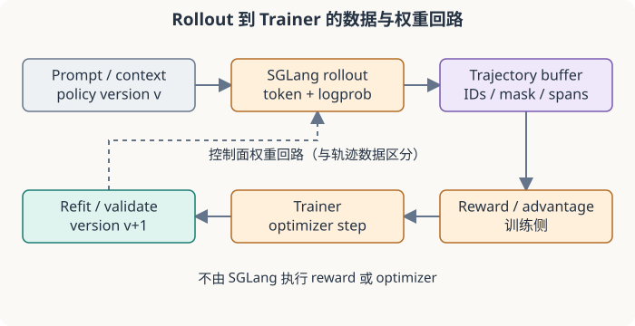
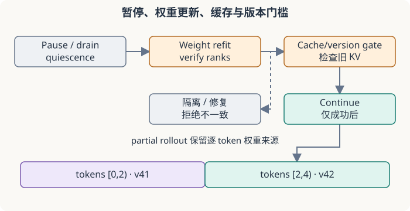

第 35 章 · SGLang 高级机制
SGLang for RL：Rollout 数据、权重版本与引擎协同
从采样到 trainer 再到 weight refit，如何保护 logprob、KV 与策略版本的一致性？
RL post-training 需要从当前 behavior policy 采样 response，再由 verifier/reward、advantage estimator 与 trainer 消费 token-level 数据。SGLang 是生成和控制组件，不替代 GRPO/PPO optimizer、reward model 或数据调度系统。Rollout 吞吐、样本质量、策略陈旧性与 trainer idle 是不同目标。
1. Rollout engine 不是 Trainer
RL post-training 需要从当前 behavior policy 采样 response，再由 verifier/reward、advantage estimator 与 trainer 消费 token-level 数据。SGLang 是生成和控制组件，不替代 GRPO/PPO optimizer、reward model 或数据调度系统。Rollout 吞吐、样本质量、策略陈旧性与 trainer idle 是不同目标。

2. 训练数据契约：一条 response 到底记录什么
每条轨迹至少保存 prompt token IDs、response token IDs、response mask、behavior token logprob、termination reason、采样设置、模型版本与 reward/advantage（后两者由训练系统产生）。多轮工具调用还要区分环境/工具返回 token 与模型采样 token；只在目标策略动作上计 loss。字符串重新 tokenize 可能改变边界，不能替代原始 ID。
3. 为什么 logprob 与版本绑定
对动作 a_t、上下文 s_t，行为策略概率 μ_t(a_t|s_t) 与训练策略 πθ(a_t|s_t) 的比率 ρ_t=exp(logπθ−logμ_t)。若采样使用 temperature、top-p 等变换，必须明确 logprob 是原始模型分布还是实际采样分布，才能判断该比率的含义。单一 request version 不足以描述跨更新的 partial rollout。
4. Pause / refit / resume 状态机
在共置 GPU 中，先暂停或清空生成，按需 release_memory_occupation，训练后 resume 对应内存并 refit，校验权重及缓存策略，再 continue_generation。分离式 trainer/rollout 可走 distributed group；同机可用 tensor，弹性扩展可用 disk。具体端点要求 admin key；模型权重和 CUDA graph 相关地址/派生缓存也要遵守实际实现。

5. Partial rollout 与逐 token provenance
官方 weight_versions 示例为 v41:[0,57)、v42:[57,128)，只计输出 tokens。可选 --enable-prefill-weight-versions 则记录 prompt 版本区间，包括旧权重产生的缓存。训练系统应验证覆盖连续、区间不交叠、长度等于 token 数，并保存对应 behavior logprob。版本标签本身不是权重 checksum。
6. 旧 KV 与更新失败：不能盲目继续
abort 返回未完成请求；retract 让 running 请求回到 waiting，可释放或重建其缓存（实际 flush 还受队列状态限制）；in_place 保留运行状态并依赖既有 KV，后续 flush 会失败。源码明确：更新可能已经写入权重，却因缓存仍被占用而返回失败。此时应隔离 worker、确认真实版本及 cache 状态，再依据一致性策略重建或恢复，不能视为事务自动回滚。
7. 同步与异步训练的取舍
同步 rollout→train→refit 可减少 staleness，但长尾请求令 trainer 等待；异步 rollout 利用率可能更高，却引入旧策略样本、队列滞留与版本混合。确定性 kernel 可改善复现性但不能消除不同权重、采样分布、精度、tokenization 与 backend 造成的 mismatch。记录 per-token Δlogprob、版本 lag、有效响应 tokens/s、队列龄、refit 时间和 p95 rollout latency。
8. 交互：改变机制状态
训练推理协同状态选择
单一版本：4 个输出均由 v41 采样，span=[0,4)；behavior logprobs 必须为 4 项。
跨版本续跑：v41:[0,2)，v42:[2,4)；不能给整个轨迹只贴 v42。
错误覆盖：v41:[0,1)，v42:[2,4)：缺少 token 1 的来源；拒绝进入严格训练数据集。
上述均为教学数值；不代表 GPU benchmark。
9. 可执行 CPU 实验
下载 rl_rollout_versions.py，使用 Python 标准库执行。实验验证离散状态与边界，不调用真实 SGLang engine 或 GPU kernel。
python3 examples/rl_rollout_versions.py测试包含正常输入和不变量检查，具体断言见源文件。
10. 源码阅读路线与适用边界
固定上游实现快照 75ed36d976113c693f8e6f64925e119573a93fda。以下是源码与官方文档入口；教学公式是显式假设下的推导。
- Fine-Grained Engine Sleep and Wake Up：Memory release/resume is admin-controlled; releasing KV flushes cache and requires idle engine.
- Per-Token Weight Version Attribution：Output weight_versions spans are half-open token indices; optional prefill_weight_versions exposes older prefix KV attribution.
- Easy To Postpone Generation / Modes：Pause, refit and continue; abort/retract/in_place have distinct request-state and cache semantics.
- flush_cache_after_weight_update：A weight update may already have occurred when requested cache flush fails due to running or queued requests.
- add_logprob_return_values / append_output_token_logprobs：Scheduler processes output token logprobs for response metadata.